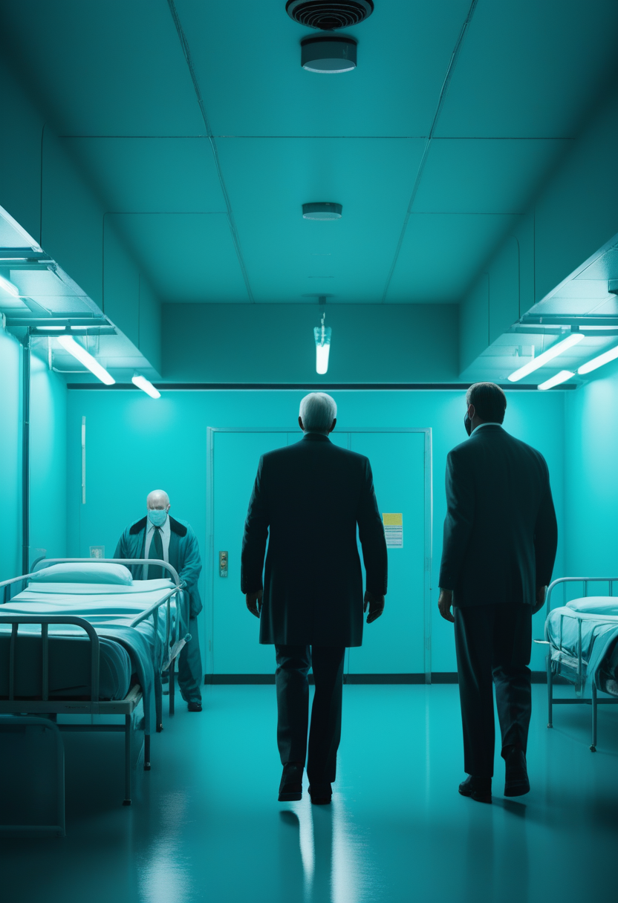
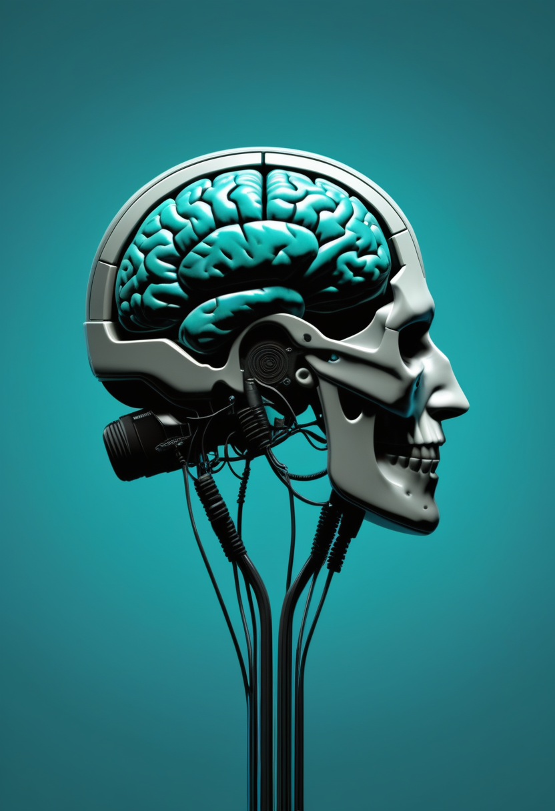
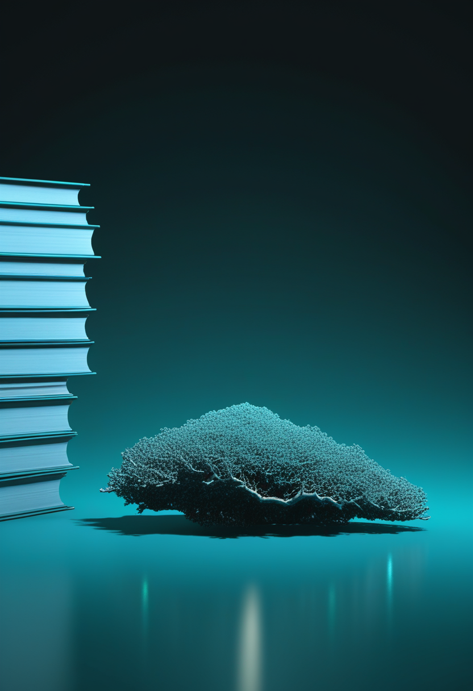

金曜日の便り。DRC(コンゴ民主共和国)のブンディブギョ型エボラは、Africa CDCとWHOが8/4時点で確定3,973例・死者1,801人(致死率約45%)・回復776人に達したと発表した ― 8/6号既報の8/1時点(3,748例・1,657人・回復708人)からさらに225例・144人が積み増された。両機関の合同代表団は7/28にウガンダ、8/4-5にブニアとキンシャサを訪問し、接触者追跡率(現状75%)の引き上げや収容率139%に達した北キブの治療センター拡充など緊急のスケールアップを要請した。一方、DRCからの飛び火を受けたウガンダは20例(輸入15・二次感染5)にとどめ7/28に終息を宣言し、同じ病原体への対応が拡大と収束という対照的な結果を見せている。命の章では、日本でゾルゲンスマ髄注が2歳以上へ適応拡大しPMDAの承認を取得する一方、Itvismaは投与から15か月経ても運動機能改善効果が深化していることがMDA 2026で示された。自由の章では、ONWARD MedicalのARC-BCI治療が7人目の患者に拡大し、Yale大学は脳の自然な経路に沿う新型非侵襲BCIをNature Neuroscienceに発表した。畏敬の章では、みちびき7号機の打ち上げが台風接近で本日から延期となり、中国の嫦娥7号は月の南極シャクルトンクレーターを狙い射場入り、CERNは稀少な粒子崩壊に標準模型を超える新物理学の4シグマの兆候を見出した。そして美の章では、英国の別荘跡地の散乱人骨が4世紀の粛清の痕跡を語り、日本人ゲノムに隠れた第三の祖先系統が見つかった ― 警鐘と前進が交錯する一日となった。

Africa CDCとWHOは8/6、DRCのブンディブギョ型エボラについて8/4時点で確定3,973例・死者1,801人(致死率約45%)・回復776人に達し、5州51保健地区に拡大したと発表した。8/6号既報の8/1時点(3,748例・1,657人)からさらに225例・144人が積み増された計算となる。テドロスWHO事務局長とカセヤAfrica CDC事務局長らによる合同代表団は7/28にウガンダ、8/4-5にブニアとキンシャサを訪問し、接触者追跡率を現状の75%から95%以上へ引き上げることや、収容率139%に達した北キブの治療センター拡充など、コミュニティ主導の対応強化を緊急に求めた。
ノバルティスファーマは4/3、遺伝子治療薬「ゾルゲンスマ髄注」について、2歳以上の脊髄性筋萎縮症(SMA)患者(抗AAV9抗体陰性に限定)を対象とした国内製造販売承認をPMDAから取得したと発表した。従来は2歳未満向けの点滴静注版のみが承認されており、今回の髄注製剤により小児から成人まで治療対象が広がる。海外第3相STEER試験・国際共同第3相STRENGTH試験のデータに基づき、両試験で運動機能の改善・維持効果が確認され、死亡に至った有害事象は認められなかった。
MDA 2026カンファレンスで発表された第3相STEER試験の解析によれば、髄腔内投与型遺伝子治療Itvisma(オナセムノゲン・アベパルボベク髄注)による運動機能の改善効果は、投与から約15か月が経過した時点でも持続し、一部指標ではむしろ深まっていることが示された。同薬は2025年12月に米国で2歳以上を対象に承認されており、欧州での承認申請は審査が続いている。
SMA治療は、日本でのゾルゲンスマ髄注承認による対象年齢拡大と、米国承認済みのItvismaが15か月という長期時点でなお効果を深めているという2つのデータが示され、地域を超えた治療アクセスの広がりと効果の持続性の両面で前進が続いている。
ONWARD Medicalは1/22、脊髄損傷患者2人に新たに「ARC-BCI Therapy」の埋め込みを実施し、同治療を受けた研究参加者が計7人になったと発表した。運動皮質に埋め込んだデバイスで運動意図に関連する脳信号を記録し、AIが解読した指示を無線で脊髄刺激装置へ伝達、脊髄の特定領域を精密に刺激することで麻痺した四肢の動きを取り戻すことを目指す。同治療は2024年にFDAから画期的医療機器指定を受けている。

Yale大学の研究チームは6/9、リアルタイムfMRIを2秒間隔で読み取り脳活動を直接ゲーム内操作に変換する非侵襲型BCIを発表した。個人ごとの脳活動の自然な幾何学的構造(神経マニフォールド)をアルゴリズムT-PHATEで学習し、その経路に沿って設計することで、従来は最大10回の訓練が必要で約3分の1のユーザーが習得できなかった操作を、1時間未満の訓練で習得可能にしたという。
BCIは、ONWARD Medicalの脊髄損傷者向け侵襲的インプラントによる運動機能回復と、Yale大学のfMRIベース非侵襲インタフェースによる習得時間の劇的短縮という、異なるアプローチで「脳とどう対話するか」という根本課題への取り組みが同時に進んでいる。
Africa CDCとWHOは8/6、DRCのブンディブギョ型エボラについて、8/4時点で確定3,973例・死者1,801人(致死率約45%)・回復776人に達し、5州51保健地区に拡大したと発表した。両機関の合同代表団(WHOテドロス事務局長、Africa CDCカセヤ事務局長ら)は7/28にウガンダ、8/4-5にブニアとキンシャサを訪問し、接触者追跡率を現状の75%から95%以上へ引き上げることや、収容率139%に達した北キブの治療センター拡充など、コミュニティ主導の対応強化を緊急に求めた。
ウガンダ保健省は7/28、5/15にDRCからの輸入症例で始まった同国のエボラアウトブレイクについて、感染連鎖がすべて解明され伝播が遮断されたとして終息を宣言した。標準的な42日間の観察期間を待たずに宣言に至ったのは、確定20例(輸入15例・二次感染5例)・回復18例・死者2名という限定的な規模にとどまり、最後の入院患者が7/16にムラゴ国立隔離センターを退院していたためという。
DRCでは症例・死者ともに増加が続き接触者追跡や病床の逼迫という構造的課題が露呈する一方、隣国ウガンダは輸入症例による飛び火を20例に封じ込め迅速な終息宣言に至った ― 同じ病原体への対応が、拡大と収束という対照的な結果を同時に見せている。
JAXAは8/3、準天頂衛星「みちびき7号機」(QZS-7)を搭載したH3ロケット9号機について、本来8/7に予定していた打ち上げを台風T2613(ダルフィン)の接近に伴う悪天候予報を理由に延期すると発表した。新たな打ち上げ日は日程が確定次第、改めて発表するとしている。
中国の月探査機「嫦娥7号」が海南島の文昌衛星発射センターに到着し、長征5号ロケットによる2026年8月中の打ち上げに向けた準備が進んでいる。周回機・着陸機・小型ホッピング探査機・ローバーで構成され、南極シャクルトンクレーター縁の照射域への着陸を狙う。国際協力ペイロード6基を含む計21種の科学機器を搭載し、水氷の探査と将来の月面研究基地候補地の評価を目的とする。

CERNのLHCb実験は、2011〜2018年に記録された約6500億個のB中間子崩壊のうち、100万個に1個という稀少な「ペンギン崩壊」過程(B中間子がカオン・パイオン・ミューオン対の4粒子に変換する過程)を解析し、標準模型の予測から4シグマ(標準模型が正しい場合に偶然この乖離が起きる確率は1万6000分の1)で外れる挙動を確認したと発表した。レプトンとクォークを統合する未知の粒子「レプトクォーク」などが原因である可能性が指摘されているが、完全な発見と認められる5シグマの基準にはまだ届いていない。
宇宙分野は、台風という地上の気象がロケット打ち上げの歩みを止める現実的な足踏み、中国が南極の水氷を狙って射場入りする月探査、そしてCERNが稀少な粒子崩壊の中に標準模型を超える新物理学の兆しを見出す基礎科学の探究が同時に並び、地に足のついた運用と根源的な問いへの挑戦が並走している。
レディング大学のマイケル・フルフォード教授らはBritannia誌に、英ワイト島のブレイディング・ローマ別荘で見つかった散乱人骨群についての研究を発表した。1880年の発見以来謎とされてきた人骨に対し放射性炭素年代測定とコイン分析を実施した結果、3〜4世紀の年代が判明。成人4体以上・青年1体・新生児2体分の骨は正式な埋葬ではなく散乱した状態で見つかり、大腿骨に残る動物による噛み跡や首・肋骨の切創痕が、暴力的な出来事を示唆している。
理化学研究所などの研究チームはScience Advances誌に、3200人超の全ゲノムシーケンス解析により、日本人の祖先系統が従来説の縄文系狩猟採集民と後続の東アジア系渡来民という「二重起源」だけでなく、東北アジアに連なる第三の系統(古代の蝦夷との関連が示唆される)を含むことを明らかにしたと発表した(5/14)。従来のDNAマイクロアレイの3000倍にあたるデータ量を用いた解析で、糖尿病・心疾患・がんなどに関わるネアンデルタール人・デニソワ人由来のDNAも新たに特定された。
美の章では、英国の散乱人骨が別荘の華やかな暮らしの裏にあった暴力の痕跡を静かに語り、日本のゲノム研究が「二つの祖先」という定説の奥にもう一つの系統を見出した ― どちらも、既に知っていたはずの場所に新たな層が眠っていたことを示している。
2026年8月7日、DRCのブンディブギョ型エボラは、Africa CDCとWHOが8/4時点で確定3,973例・死者1,801人・回復776人に達したと発表し、8/6号既報の数値からさらに225例・144人が積み増された。両機関の合同代表団はウガンダとDRC現地を訪問し、接触者追跡率の引き上げや過密した治療センターの拡充など緊急のスケールアップを要請した。一方、DRCからの飛び火を20例に封じ込めたウガンダは7/28に終息を宣言し、拡大と収束という対照的な結果が同じ病原体をめぐって同時に進んでいる。命の現場では、日本でゾルゲンスマ髄注が2歳以上へ適応拡大し、Itvismaは15か月経ても運動機能改善効果を深めていた。自由の分野では、ONWARD MedicalのARC-BCI治療が7人目の患者に拡大し、Yale大学は習得時間を劇的に短縮する新型非侵襲BCIを発表した。畏敬の章では、みちびき7号機の打ち上げが台風接近で延期となり、嫦娥7号は月の南極を目指し射場入り、CERNは稀少な粒子崩壊の中に新物理学の兆しを見出した。そして美の章では、英国の別荘跡地が4世紀の粛清の痕跡を語り、日本人ゲノムには隠れた第三の祖先系統が見つかった。
では、また明日の朝に。 — JaH